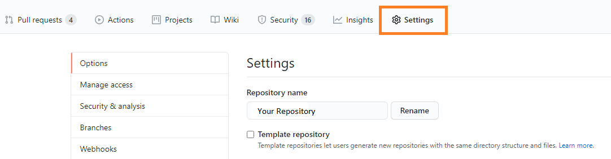
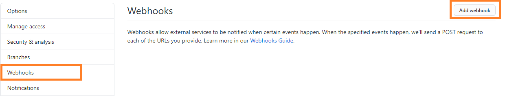

Open your Github repository and navigate to Settings.

Click 'on Webhooks' and then on the Webhooks page, Add webhook.

In the payload url specify: https://your gemini url/api/github/commit?token=YOUR API KEY (from web.config).
Set content type to: application/json
Select the option to: just push event
Click Add Webhook
When commiting files into GitHub simply provide a Gemini item number like so.
Notethe 'GEM:' prefix is mandatory and you can specify multiple Gemini items by comma-separating them as part of the commit comment message.
All commited files and comments appear under Code Review as follows.